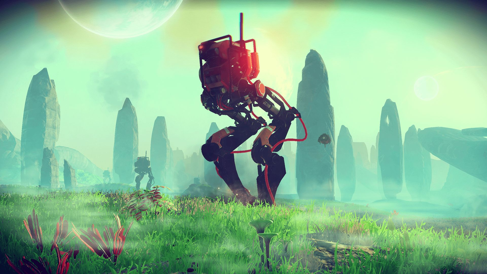
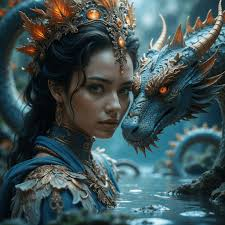

AI, хмари та метавсесвіти
ШІ створює персонажів і світи, хмарні сервіси роблять ігри доступними будь-де, а метавсесвіти — це новий рівень інтерактиву.
Погляд у завтра
Нейромережі, що генерують сюжети, та ігри, які живуть у хмарі — ось, що чекає нас незабаром.


Завантаж свої футуристичні фотографії в папку Images та зміни назви файлів у коді, щоб побачити ефект.